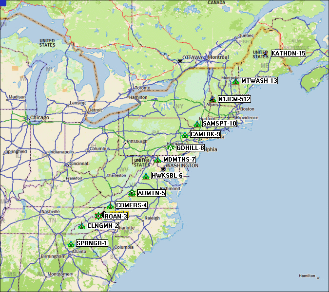

This is the 2019 report. For the background, see main ATGP page
Another success from Springer to Katahdyn, but Springer packet never got to Katahdyn.
Though we realized at the end that we should have had the end stations beaconing
every minute instead of 10. This would have speeded up success by a factor of
ten! We will improve this 20-to-1 in 2020 by adjusting rates and doing 9600.
See 2020 Plan.
The link was delayed to about ??? due to failed power supply at Sam's Point and a weak link from GDHill-8 to MDMTNS-7. Our new first-timer at Hawksbill came up early and was working fine after being bit by the BUSY squelch thing. By XXXX packets were all going both ways except for the final one to Maine. At 1530 we switched to 9600 and all station squickly showed up.
The image below was captured by AL0I from packets heard via AOMTN-5.

2019 Results and comments:
Broken Links represent Reports not yet submitted (or I screwed up, if you did submit)
Bob, WB4APR
See my other GENERAL page on APRS applications and Ideas on The AT
Return to The APRS HOMEPAGE or SiteMap.
{kind=link}